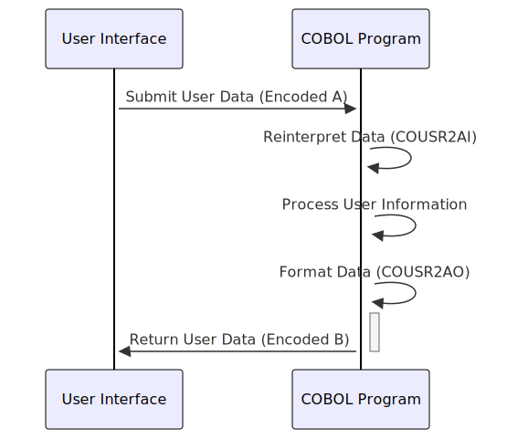

–CONTEÚDO A SER TRADUZIDO– Gerado em: 1º de outubro de 2024
Título do Documento: COUSR02 - Especificação da Estrutura de Dados da Conta de Usuário
Descrição Resumida:
Este documento descreve a estrutura e o uso da estrutura de dados COUSR02, projetada para armazenar informações de contas de usuário de forma flexível em caracteres. Ela atende a codificações ASCII e EBCDIC, tornando-a adequada para diversas interações de sistema.
Histórias de Usuário: Como administrador de sistema, preciso de uma maneira padronizada de armazenar e recuperar dados de contas de usuário, incluindo suas credenciais de login, detalhes pessoais e informações relacionadas ao sistema. Esses dados devem ser acessíveis em diferentes codificações de caracteres para oferecer suporte a vários aplicativos e plataformas.
Épico Relacionado: 6 - Gerenciamento de Usuários e Segurança
Requerimentos Técnicos:
COUSR2AI e COUSR2AO, são definidas para representar as mesmas informações de conta de usuário usando diferentes esquemas de codificação de caracteres.COUSR2AI provavelmente usa uma codificação em que os caracteres alfanuméricos (A-Z, 0-9) são representados diretamente, enquanto COUSR2AO usa uma codificação diferente, possivelmente EBCDIC.PIC X para alfanumérico, COMP PIC S9(4) para numérico com sinal) e comprimento.REDEFINES permite que o mesmo local de memória seja interpretado como diferentes tipos de dados e codificações.USRIDIN, PASSWD e USRTYPE para evitar entrada de dados inválidos e potenciais riscos de segurança.Modelos Relacionados:
COUSR2AI:
TRNNAME: Nome da transação (alfanumérico, o comprimento depende da codificação)TITLE01: Título descritivo 1 (alfanumérico, o comprimento depende da codificação)CURDATE: Data atual (alfanumérico, o comprimento depende da codificação)PGMNAME: Nome do programa (alfanumérico, o comprimento depende da codificação)TITLE02: Título descritivo 2 (alfanumérico, o comprimento depende da codificação)CURTIME: Hora atual (alfanumérico, o comprimento depende da codificação)USRIDIN: ID do usuário (alfanumérico, o comprimento depende da codificação)FNAME: Primeiro nome (alfanumérico, o comprimento depende da codificação)LNAME: Sobrenome (alfanumérico, o comprimento depende da codificação)PASSWD: Senha (alfanumérico, o comprimento depende da codificação)USRTYPE: Tipo de usuário (alfanumérico, o comprimento depende da codificação)ERRMSG: Mensagem de erro (alfanumérico, o comprimento depende da codificação)COUSR02AO:
COUSR2AI, mas com diferentes representações de caracteres com base no esquema de codificação.Configurações:
COUSR2AI e COUSR2AO precisa ser definida e documentada explicitamente. Isso garante a interpretação e conversão corretas dos dados ao interagir com sistemas externos.Melhorias de Código:
REDEFINES para lidar com codificações diferentes, especificar explicitamente o padrão de codificação (por exemplo, ASCII, EBCDIC) para cada estrutura melhoraria a clareza e a manutenção do código.COUSR02. Isso evita problemas de integridade de dados e aumenta a segurança.PASSWD não seja armazenado em texto simples. Implemente um algoritmo de hash de senha seguro para proteger as credenciais do usuário contra acesso não autorizado.Melhorias de Segurança:
COUSR02. Somente pessoal autorizado e processos devem ser capazes de ler, modificar ou excluir informações da conta de usuário.Diagrama Conceitual:
–Made by “Smart Engineering” (by Compass.UOL)–